NodeConf.EU
November 2018
Kilkenny, Ireland
Kill Kenny

Agenda
- Badge
- Talks
- Workshops
- Conclusion
Badge
Based on Espruino and Pixl.js
More about this later
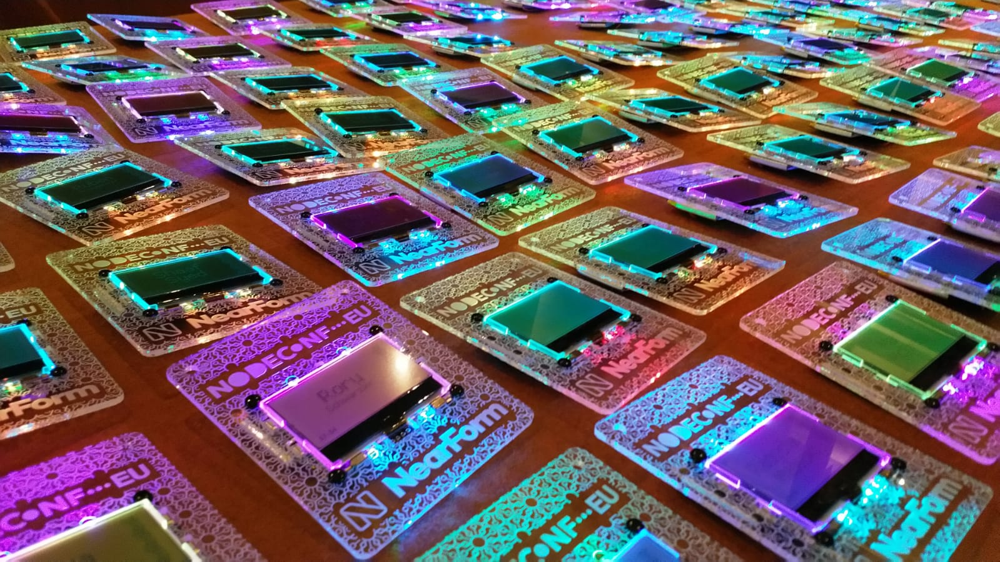Talks
- Serverless & FaaS
- Machine Learning / AI
- State of Node.js Core
- NPM Analyze
- How and what to look for in a readme
- Orinoco: The new V8 Garbage Collector
And many more..
Serverless & FaaS
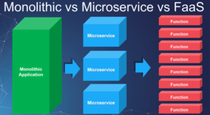Machine Learning / AI
A Doppelganger game using image recognition
Tensorflow.js: open source framework for machine learning
State of Node.js Core
- Node 10.x release
- Node 12.0.0 is coming in 2019, April 23rd
Current focus: making it faster
Node 11.x has worker threads, effectively allowing us to use multithreading for CPU intensive JS operations
NPM Analyze
CLI tool to analyze the content, or the dependencies of your project. Free space, cluttering and dependencies get a better look.
Effective Documentation for Open Source Projects
Documentation is critical in creating a successful open source project, yet it can be hard to know where to start. Tips on how, what and why.
Orinoco: The new V8 Garbage Collector
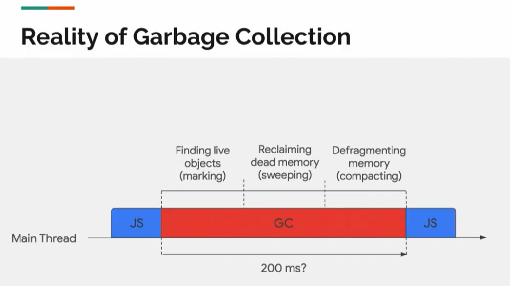And many more:
- ES Modules
- Istio
- Diagnostic Tooling in production
- Yarn Package management
- Etc etc..
Workshops
- Google Assistant
- GraphQL & Serverless
- Bluetooth LE, Microcontrollers and Badges
- And more..
Google Assistant
Building your own google assistant voice command!
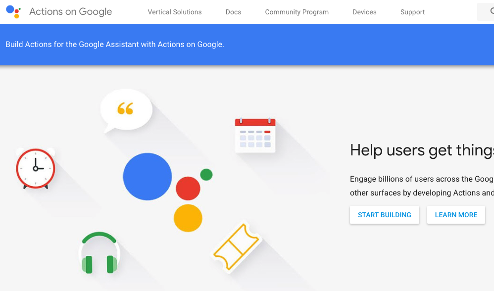GraphQL & Serverless
Building upon the foundation of the talks in the earlier day
Bluetooth LE, Microcontrollers and Badges
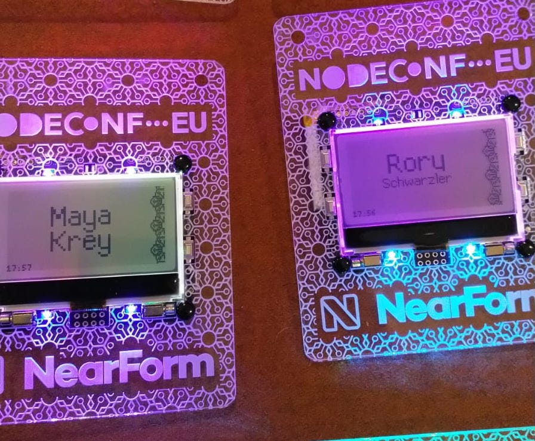Custom badge.js!
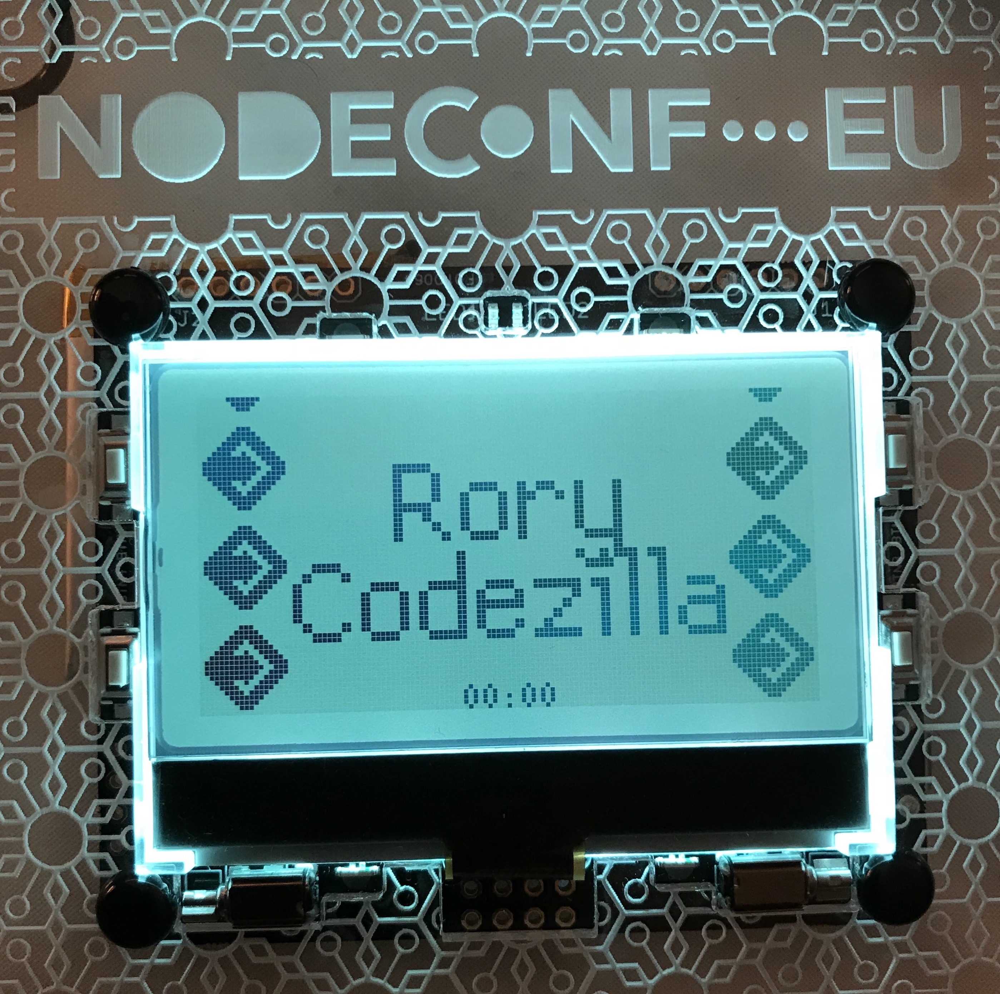"Workshops"
More hacking badges
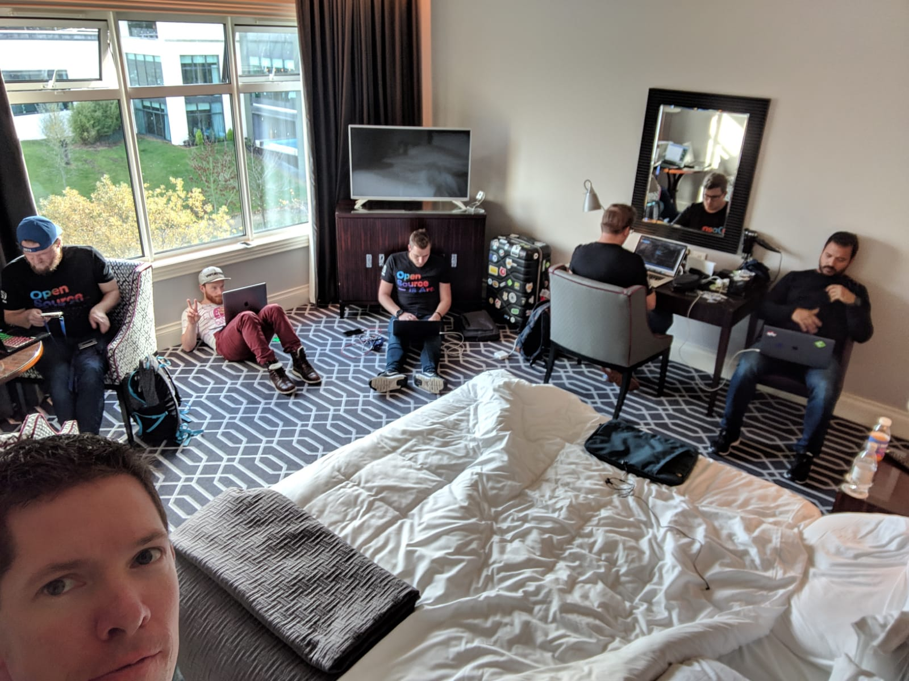"Teambuilding"
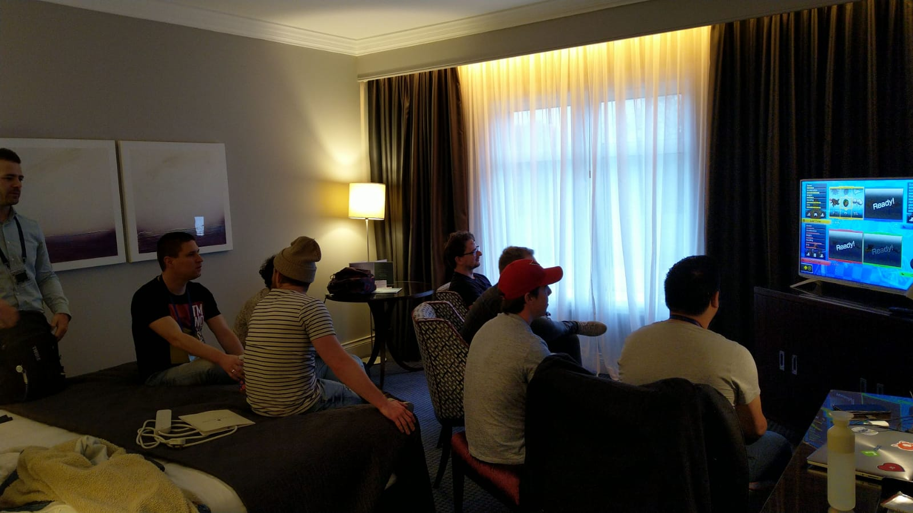Teambuilding continued
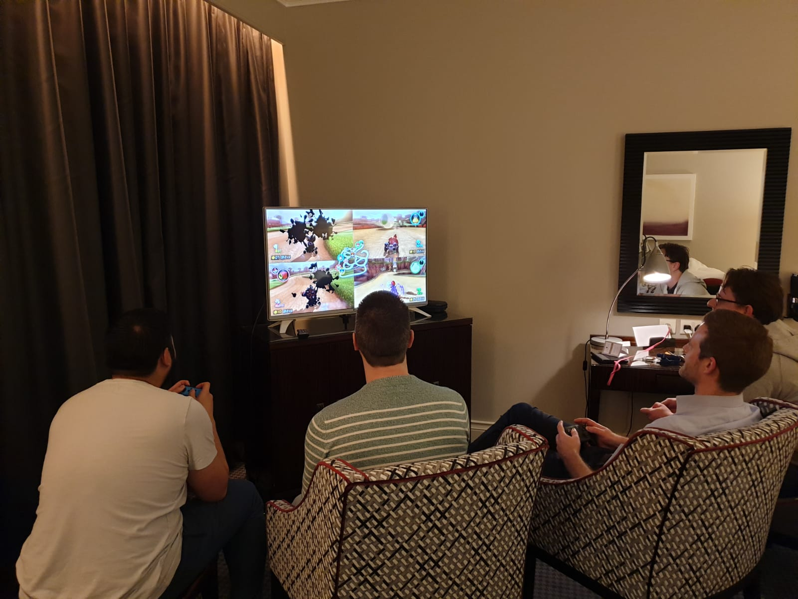Just a tad thirsty
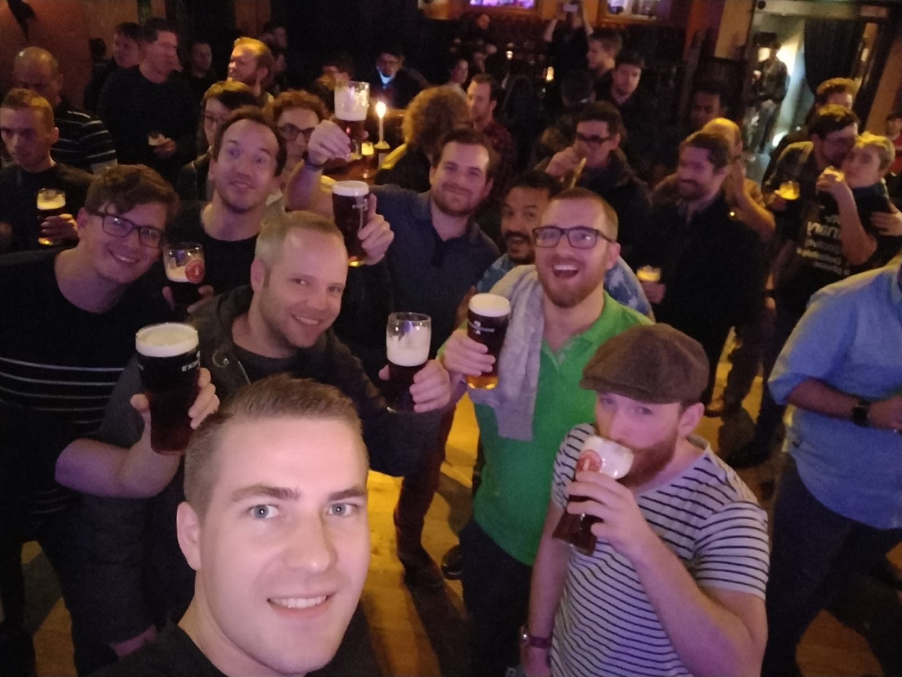Teambuilding can't be done on an empty stomach
Conclusion
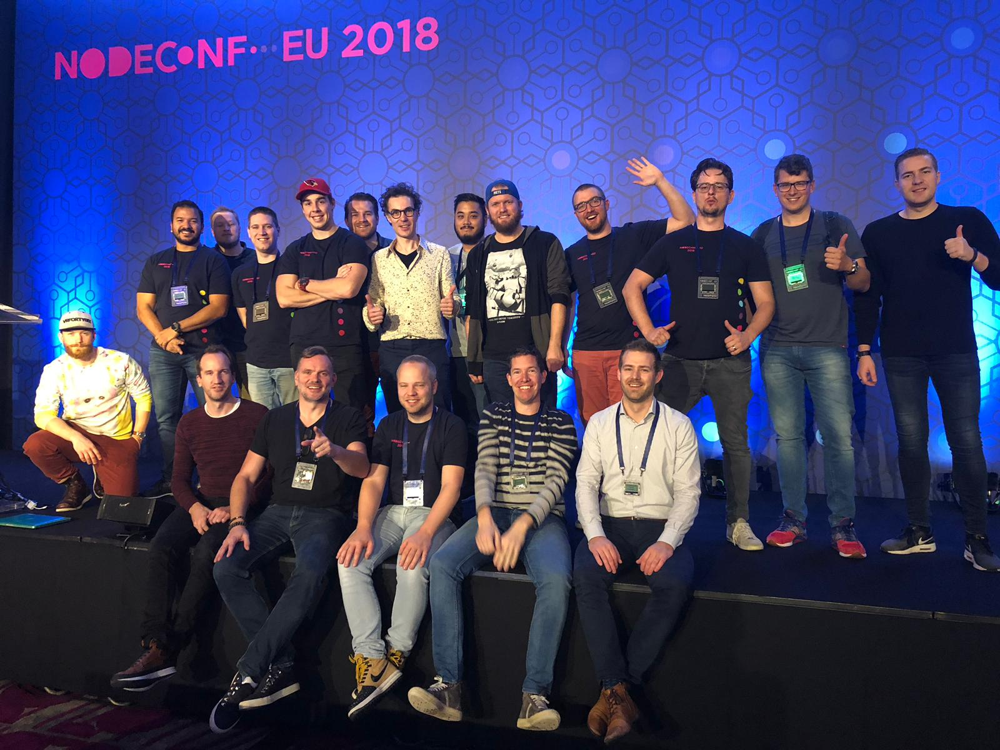